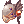
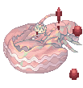

Illusion of Underwater
Main Quest
| Requirements | |
|---|---|
| Base Level: | 140 |
| Starting Point: | |
| Rewards | |
| Experience: | 222,093,000 (Base) and 155,465,000 (Job). |
| Items: | Allows crafting of Illusion gears |
- The quest starts at Izlude at . You can get there using the Warper > Illusion Dungeons > Illusion of Underwater.
- Speak with Gein and he tells you he found Sirud's fishing rod. You'll need to speak with Jerry.
- Go to the East Library of Prontera and enter the building. Once you're inside, go to the top left corner of the library and speak with Jerry .
- Go back to Izlude and speak with Gein again once more. He will give you an Abyssal Essence.
- Go back to Jerry in the Prontera Library, same location as step 3. Speak with him.
- Go back to Izlude... and once you get close to , Jerry will appear alongside.
- Talk to Jerry and he will teleport you to the Deep Sea dungeon.
You now have access to both levels of the dungeon. You can talk to the Gatekeeper to go to the lower level with 180+ monsters. - Talk to Sirud right at the entrance.
- Talk to Jerry right next to you and he will ask you to hunt down the following monsters (they are all on the same floor as you are). You can also start collecting Abyssal Essences while killing those as you'll need them for the next step.
- 10 Deep Sea Srophos
- 10 Deep Sea Deviaces
- 10 Deep Sea Marses
- Once you've defeated them, go back to Jerry and speak with him again. He will reward you with 2
 Illusion Stones and some experience.
Illusion Stones and some experience. - He will now ask you to gather 1 Abyssal Essences, which drops from any Deep Sea creatures.
- Return to him after you've gathered enough and he will warp you back to the surface. He will also give you 2 Illusion Stones and some experience.
You have now unlocked all the daily quests!
You can talk to Jerry to enter the Illusion of Underwater dungeon. If he doesn't appear, you'll have to walk near him, similar to step 6.


Daily Quests
Abyssal Essence Collection
| Requirements | |
|---|---|
| Base Level: | 140 |
| Starting Point: | |
| Rewards | |
| Experience: | 111,046,500 (Base) and 77,732,500 (Job). |
| Items: | 3 Illusion Stones
|
- You will need to collect 2 Abyssal Essences from any Deep Sea creatures.
- Return to Jerry at the dungeon's entrance. You will be rewarded with 3 Illusion Stones and some experience.
Deep Sea Creatures Control
| Requirements | |
|---|---|
| Base Level: | 140 |
| Starting Point: | |
| Rewards | |
| Experience: | 111,046,500 (Base) and 77,732,500 (Job). |
| Items: | 3 Illusion Stones
|
- You will need to hunt 10 Deep Sea Srophos, 10 Deep Sea Deviaces and 10 Deep Sea Marses.
- Return to Jerry at the dungeon's entrance. You will be rewarded with 3 Illusion Stone and some experience.
Deep Sea Creatures Control (1)
| Requirements | |
|---|---|
| Base Level: | 180 |
| Starting Point: | |
| Rewards | |
| Experience: | 502,687,500 (Base) and 351,881,250 (Job). |
| Items: | 4 Illusion Stones
|
- You will need to hunt 10 Deep Sea Srophos, 10 Deep Sea Deviaces and 10 Deep Sea Marses.
- Return to Jerry at the dungeon's entrance. You will be rewarded with 4 Illusion Stone and some experience.
Deep Sea Creatures Control (2)
| Requirements | |
|---|---|
| Base Level: | 180 |
| Starting Point: | |
| Rewards | |
| Experience: | 502,687,500 (Base) and 351,881,250 (Job). |
| Items: | 4 Illusion Stones
|
- You will need to hunt 15 Deep Sea Sedoras and 15 Deep Sea Stroufs.
- Return to Jerry at the dungeon's entrance. You will be rewarded with 4 Illusion Stone and some experience.
Daily Quest Reset

As an exclusive feature to NovaRO, you are able to reset all your daily quests cooldowns.
That means you are able to farm Illusion Stones as much as you want on a single character, without having to create additional characters to bypass the cooldown.
To do so, talk to Osmundi. He can be found inside one of the following locations:
- Illusion of Moonlight dungeon .
- Illusion of Vampire dungeon .
- Illusion of Frozen dungeon .
- Illusion of Abyss dungeon .
- Illusion of Teddy Bear dungeon .
- Illusion of Luanda dungeon .
- Illusion of Twins dungeon .
- Illusion of Labyrinth dungeon .
- Illusion of Underwater dungeon .
They are separated in 5 distinct difficulty groups. Each reset will award you with a set amount of:
- Tier 1: Illusion of Moonlight and Illusion of Frozen.
- Reset Reward: 10 Illusion Stone and a choice between
 Moonlight Refine Box and
Moonlight Refine Box and  Frozen Refine Box
Frozen Refine Box
- Reset Reward:
- Tier 2: Illusion of Vampire and Illusion of Abyss
- Reset Reward: 12 Illusion Stone and a choice between
 Vampire Refine Box and
Vampire Refine Box and  Abyss Refine Box
Abyss Refine Box
- Reset Reward:
- Tier 3: Illusion of Teddy Bear and Illusion of Underwater - 1
- Reset Reward: 14 Illusion Stone and a choice between
 Teddy Bear Refine Box and
Teddy Bear Refine Box and  Underwater Refine Box
Underwater Refine Box
- Reset Reward:
- Tier 4: Illusion of Luanda and Illusion of Twins
- Reset Reward: 16 Illusion Stone and a choice between
 Luanda Refine Box and
Luanda Refine Box and  Twins Refine Box
Twins Refine Box
- Reset Reward:
- Tier 5: Illusion of Labyrinth and Illusion of Underwater - 2
- Reset Reward: 22 Illusion Stone and a choice between
 Labyrinth Refine Box and Underwater Refine Box
Labyrinth Refine Box and Underwater Refine Box
- Reset Reward:
The first reset of the day, for each group, will give a 12 Illusion Stone bonus.
Once you complete the dailies of one of the Tiers above, you can reset them. After a reset, these quests will not give any experience until their original 24 hours cooldown pass.
Each Tier can be completed and reset separately, but you cannot reset dailies from a single Illusion Dungeon without completing the others in their respective group.
MVP Spawn
To spawn the Deep Sea Kraken MVP, you have to kill 2000 mobs in the first floor of the dungeon. There will then be an announce on the map when he appears.
To spawn the Deep Sea Witch MVP, you have to kill 2000 mobs in the second floor of the dungeon. There will then be an announce on the map when she appears.
Illusion Gears
Speak with Horen at the entrance of the Illusion of Underwater dungeon.
More information about these Illusion Enchants can be found in this page.
| Image | Name | Description | Crafting |
|---|---|---|---|

|
Illusion Electric Eel [2] |
MATK + 180
ATK + 30
MATK + 40
Attack: 170 Weight: 180 Weapon Level: 4 Required Level: 120 Usable Jobs: Wanderer |
|

|
Illusion Electric Guitar [2] |
MATK + 180
ATK + 30
MATK + 40
Attack: 170 Weight: 180 Weapon Level: 4 Required Level: 120 Usable Jobs: Minstrel |
|

|
Illusion Brionac [2] |
ATK + 10%
ATK + 5%.
Attack: 210 Weight: 300 Weapon Level: 4 Required Level: 120 Usable Jobs: Swordsman classes. |
|

|
Illusion Katar of Frozen Icicle [2] |
ATK + 5 per refine rate.
ATK + 5%.
Attack: 220 Weight: 120 Weapon Level: 4 Required Level: 120 Usable Jobs: Assassin classes. |
|

|
Illusion Death Guidance [2] |
ATK + 4 per refine rate. ATK + 30.
Attack: 240 Weight: 200 Weapon Level: 4 Required Level: 120 Usable Jobs: Swordsman classes. |
|

|
Illusion Zephyrus [3] |
ATK + 4 per refine rate. ATK + 30.
Attack: 250 Weight: 330 Weapon Level: 4 Required Level: 120 Usable Jobs: Swordsman classes. |
|
| Illusion Saint Robe [1] |
MaxHP + 10%, MaxSP + 10%.
ATK + 30.
Defense : 60 Weight : 60 Required Level : 120 Usable Job : Acolyte classes, Merchant classes. |
||

|
Illusion Saphien's Armor of Ocean [1] |
MaxHP + 10%.
Class : Armor Defense : 50 Weight : 220 Required Level : 120 Usable Job : Swordsman classes, Merchant classes. |
+7 Saphien's Armor of Ocean [1]
|

|
Illusion Chain Mail [1] |
MaxHP + 10%, MaxSP + 10%.
ATK + 5%.
Defense : 70 Weight : 330 Required Level : 120 Usable Job : Swordsman classes, Merchant classes, Thief classes. |
|

|
Illusion Morrigane's Helm [1] |
Str + 5, Cri + 5.
Str + 5, ATK + 10%, Cri + 5
Defense : 15 Location : Upper Weight : 50 Required Level : 130 Usable Job : All except Novice. |
 +7 Morrigane's Helm
|

|
Illusion Morrigane's Manteau [1] |
Luk + 5, Flee + 20.
Defense : 12 Weight : 60 Required Level : 130 Usable Job : All except Novice. |
|
| Illusion Morrigane's Belt [1] |
Str + 3, MaxHP + 5%.
increases attack speed by 10% (reduces delay after attack by 10%).
Defense : 0 Weight : 20 Required Level : 130 Usable Job : All except Novice. |
| |

|
Illusion Morrigane's Pendant [1] |
ATK + 20, Cri + 5. ATK + 10%.
Defense : 0 Weight : 20 Required Level : 130 Usable Job : All except Novice. |
|


 150
150  +7
+7  +7
+7  150
150 

 +7
+7  150
150 
 +7
+7  150
150  +7
+7  150
150 
 +7
+7 


 +7
+7  15
15 
Illusion Enchants
Illusion equipment can be enchanted. For details, see here.
Refine Box
Completing Daily Quest Reset rewards the player with a Refine Box that can upgrade (or sometimes downgrade) a +4 or higher illusion equipment from the matching dungeon to +7 ~ +10.
Defeating an illusion MVP rewards the MVP player (to be confirmed) by chance with a Special Refine Box that can upgrade (or sometimes downgrade) a +4 or higher illusion equipment from the matching dungeon to +9 ~ +12.
You can exchange 25 Refine Box of a single dungeon for 1 Special Refine Box of the same dungeon from Illusion Merchant NPC ().
Note that:
- The chance of getting each refine level is not uniform. For example, there is a significantly lower chance of getting +10 than getting +7 when using a regular Refine Box.
- An upgrade is not guaranteed. For example, using a Refine Box on a +9 illusion equipment may result in a downgrade to +7.
Monsters
First Floor
| Image | Name | Level | HP | Size / Race / Element |
|---|---|---|---|---|

|
Deep Sea Sropho | 147 | 336,823 | Medium / Fish / Water 3 |
| Deep Sea Obeaune | 149 | 340,238 | Medium / Fish / Water 2 | |
| Deep Sea Deviace | 150 | 348,355 | Medium / Fish / Water 4 | |
| Deep Sea Marse | 149 | 335,141 | Small / Fish / Water 2 | |

|
Deep Sea Merman | 148 | 337,534 | Medium / Fish / Water 3 |

|
Deep Sea Kraken | 204 | 14,342,360 | Large / Fish / Water 4 |

Second Floor
This map has monsters that have drops with increased rates:
- Monsters will show them when you use @mi .
- Not all drops of a monster are affected by it, you've to check them one by one.
- Any type of Bubble gum will not affect the drop rate of these items and you see a (No Gum) on @mi.
- Example: Banana Bread 2.00% (No Gum)
- In this map the items affected are Abyssal Essence
| Image | Name | Level | HP | Size / Race / Element |
|---|---|---|---|---|
| Deep Sea Sedora | 199 | 2,875,143 | Medium / Fish / Wind 3 | |
| Deep Sea Swordfish | 199 | 2,997,411 | Large / Fish / Water 3 | |

|
Deep Sea Strouf | 201 | 2,967,419 | Large / Fish / Water 3 |
| Deep Sea Phen | 199 | 2,897,158 | Medium / Fish / Water 2 | |
|  | Deep Sea King Dramoh | 205 | 3,115,698 | Large / Fish / Water 3 |
|
|
Deep Sea Witch | 205 | 75,746,433 | Large / Demon / Dark 3 |
Cards
| Card | Type | Effects |
|---|---|---|
 Deep Sea Sropho Card Deep Sea Sropho Card
|
Weapon Card |
Increases wind property magical damage by 3%. |
 Deep Sea Obeaune Card Deep Sea Obeaune Card
|
Accessory Card |
MATK + 30 Increases magical damage against water property enemies by 15%. |
 Deep Sea Deviace Card Deep Sea Deviace Card
|
Weapon Card |
Increases physical damage against water property enemies and fish race monsters by 5%. |
 Deep Sea Marse Card Deep Sea Marse Card
|
Shield Card |
Reduces physical and magical damage taken from earth property enemies by 15%. |
 Deep Sea Merman Card Deep Sea Merman Card
|
Shoes Card |
ATK + 4 per 15 base STR. Increases critical damage by 15%. |
 Deep Sea Sedora Card Deep Sea Sedora Card
|
Weapon Card |
Increases critical chance against fish race monsters by 30%.
Increases critical damage by 15%. |
 Deep Sea Swordfish Card Deep Sea Swordfish Card
|
Headgear Card |
Reduces damage taken from water property by 10%.
MATK + 3%. |
 Deep Sea Strouf Card Deep Sea Strouf Card
|
Armor Card |
MaxHP + 10%, MaxSP + 5%. ATK + 30. MATK + 30. |
 Deep Sea Phen Card Deep Sea Phen Card
|
Garment Card |
Reduces damage taken from neutral property by 15%. Reduces damage taken from neutral property by additional 5%. |
 Deep Sea King Dramoh Card Deep Sea King Dramoh Card
|
Headgear Card |
MaxHP - 5%.
STR + 4, MaxHP + 15%. |
 Deep Sea Kraken Card Deep Sea Kraken Card
|
Weapon Card |
Increases long ranged physical damage by 25%. |
 Deep Sea Witch Card Deep Sea Witch Card
|
Garment Card |
Increases fire and shadow property magical damage by 100%. |